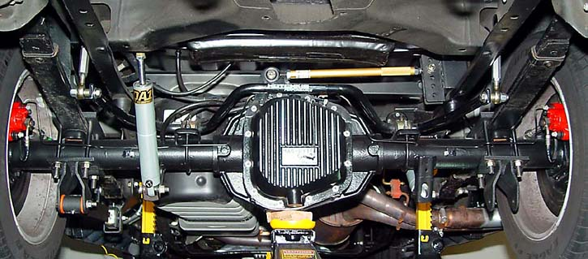
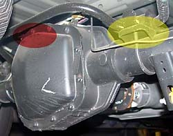
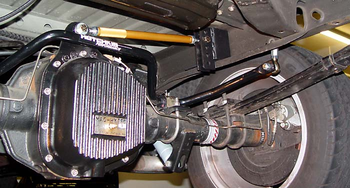
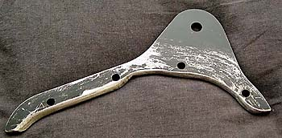
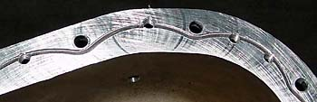
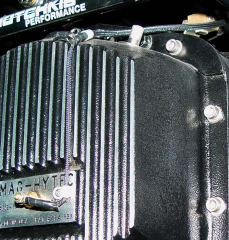

|
Mag-Hytec Differential Cover Fitment |
|  |
|
 Anti-away bar clearance: The Mag-Hytec will interfere with the Lightning's rear sway bar (at least with a lowered suspension) at the area in red in the image to the right. As the wheels travel up, this part of the anti-sway bar travels down. Note also that the below is an old photo with the stock bar. The Hotchkis anti-sway is even worse. Some have been able to correct the interference by playing with the end link length. I was not. I eventually replaced the Hotchkis bar with a Hellwig bar, which mounts in front of the rear axle. |
|
 Panhard bar mount: Another issue is conflict with the mounting piece for a panhard bar (such as the Ruslow bar pictured above). The panhard mount needs to be extensively ground down to accommodate the thicker shell of the Mag-Hytec. Additionally, the Mag-Hytec uses stainless allen bolts to install, which are to be torqued to no more than 16 ft. lbs. to avoid overcompressing the o-ring seal. Even though the panhard mount is only subjected to lateral loads, I was concerned that the stainless bolts would not provide enough support to securely hold the mounting bracket. Consequently, I attached the panhard mount directly to the diff cover. This way, all of the diff cover bolts work together to take the shear load. To do this, here's what you need:
First, grind away all material on the panhard mount which interferes with the fit against the diff cover. This is tricky, as the diff cover has radiused corners where the sides meet the mounting flange. It took about an hour of grinding to get it right. It might be simpler to just space the mount out a little from the diff cover. The fit may still not be perfect, as the diff cover flange slopes away a little, meaning that the panhard mount will not be perfectly parallel to the cover-to-diff mounting surface, but it's just a little off. I quit when the four top mounting holes were just about lined up--maybe 1/16" off and elongated the holes on the panhard mount just a little so that the bolts could slip through. This was easier than removing 1/16" more material from the mount. The image below shows the underside of the mount. Note that the trick is to round off the edge to conform to the radius of the Mag-Hytec. It gets a little thin near the middle, but there will be six small bolts and four large bolts holding it down. Recall also that the only real loads the mount is subjected to are lateral, relatively close to the centerline of the long part. Next, remove the o-ring from the diff cover. Temporarily bolt the panhard mount to the diff cover. Then, place the assembly on the drill press. Drill hole of the appropriate size for the panhard mount-to-cover bolts of your choice. I used HELP! branded "5/16 universal transmission pan bolts" (part # 45660), which I just happened to have around. They were perfect! They are 5/16-20 threaded and measure approximately 39/64" in threaded area. They have a large flange head with serrations to grab the metal. While I don't think they are grade 8, they will only be subjected to side loads and will be augmented by the four adjacent grade 8 bolts. Note that the holes will likely end up right through the o-ring groove. Remove the panhard mount from the diff cover. Using the next larger drill bit, bore out the holes in the panhard mount so that the bolts will slide through (5/16" using the bolts above). Then tap the diff cover for the mounting bolts. I used a 1/4" bit, which is a little on the small side, but since the diff cover is just cast aluminum, the tap had no trouble. Test fit the bolts. Grind off any of the bolts that protrude into the o-ring channel. The HELP! bolts mentioned above were spot-on perfect. Wash the panhard mount in hot soapy water. Sand and paint to cover up the abuse you just gave it and to prevent rust. Wait for it to dry. (Optional) Apply a generous seal of black RTV to seal the joint between the diff cover and panhard mount. I did this both the seal the surfaces from corrosion and potential leaks and to make the edge between the diff cover and panhard mount more attractive--there will be uneven gaps showing without the sealant. Wipe off any excess while it is wet. Using the black RTV, place a dollop on each area where the mounting bolts enter the o-ring channel. Replace the o-ring. Wipe off any excess RTV. Mount the diff cover using the supplied allen head bolts. I did not use a torque wrench to tighten to 18 ft. lbs., but instead just used a hex bit on a 3/8" ratchet wrench, grabbing it in the middle and tightening as much as I could from that angle. Fill the diff, drive, and check for leaks. Mine did fine--no leaks after several weeks. Now it's time to see if the mount will hold up to the stress of the panhard bar being connected. Finally, here is a closeup of the wiring harness I made for the diff temp sensor. I ran a separate ground wire, which is grounded to the screw for the upper clip shown. Both the signal and ground wires are covered in TechFlex fiberglass covering. 
|